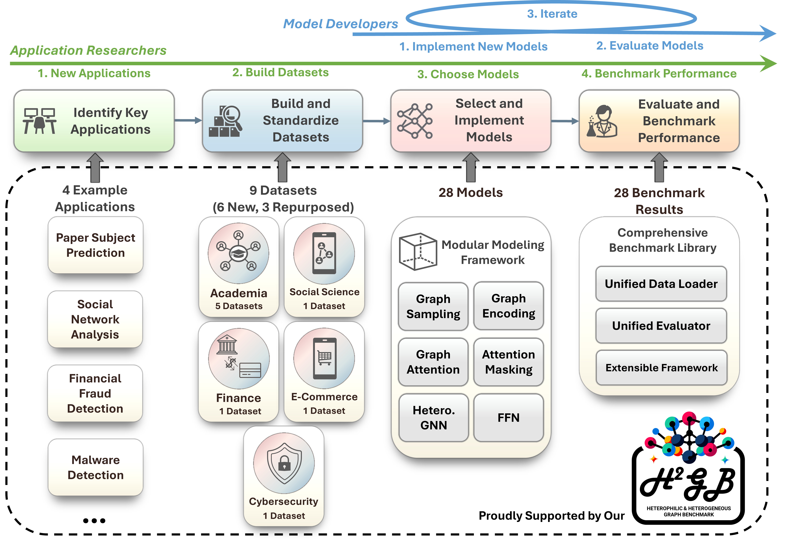

ℋ²GB Documentation
ℋ²GB (Heterophilic and Heterogeneous Graph Benchmark) is a library built upon PyTorch, PyTorch Geometric and GraphGym. It is a collection of graph benchmark datasets, data loaders, modular graph transformer framework (UnifiedGT) and evaluators designed to systematically evaluate graph learning methods in both heterophilic and heterogeneous settings. As shown in the figure, ℋ²GB encompasses 9 diverse real-world datasets across 5 domains.
We developed UnifiedGT, a modular graph transformer (GT) framework to summarize and systematically compare the performance of existing graph neural networks (GNNs) on this new benchmark. UnifiedGT is implemented as a Python library and is user-friendly. It includes a unified data loader and evaluator, making it easy to access datasets, evaluate methods, and compare performance. Its data loaders are fully compatible with popular graph deep learning framework PyTorch Geometric. They provide automatic dataset downloading, standardized dataset splits, and unified performance evaluation.
We established a standard workflow supporting both model selection and development. The green and blue arrows on top highlight two workflows how users can interact with ℋ²GB.
ℋ²GB includes heterophilic and heterogeneous graph datasets from 5 domains. You can find datasets categorized by domains through the following image link:


Install ℋ²GB
Get Started
Package Reference